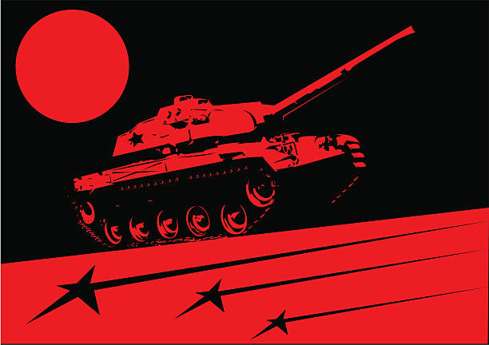
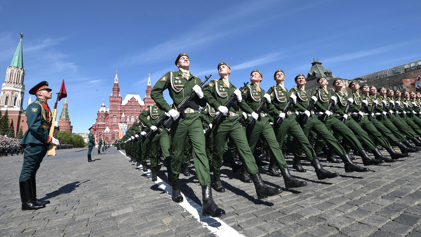
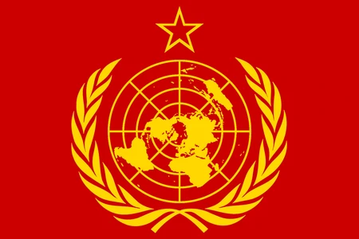
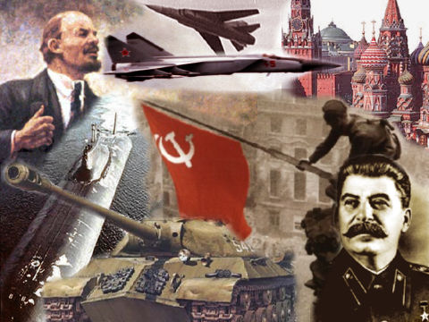

1.ソヴィエト社会主義共和国連邦国歌（1977年～）
第一に紹介するのはソ連の軍関係の曲ではなく国家です!!
このサイトを見ているということは馴染みがある方も多いのではないでしょうか!!
元は革命前の赤軍であるボリシェヴィキ党の党歌であり1944年よりこの曲になりました!
その後時代の流れに沿い歌詞が変遷していきますがその中で私は３番目（スターリン時代終結～）の歌詞が一番好きです！
そしてこの国家はロシアとなった現在でも歌詞を変えて使用されて居ますので
オリンピックなどの際は国家にも注目してみてください！
詳しい解説はこちらからどうぞ→ wiki
2.赤軍に勝るものなし(Красная Армия всех сильней)

次に紹介するのは赤軍に勝るものなしです！白軍に黒き男爵とも言われます。
堂々たる赤軍を感じてとてもかっこいいです！
またどの曲にも言えますが歌詞がとてもかっこいいので最初は字幕付きの動画を推奨します！
個人的には毎回最後に来る“Красная Армия всех сильней.”(赤軍に勝るものはない)が好きです！
詳しい解説はこちらからどうぞ→ wiki
3.в путь!(進め! 英訳:Let's go!)

三番目に紹介するのはLet's go!です！
これは戦争中に作られたものではなく戦後の映画の曲として使用されています。
最初は静かなメロディーより始まり次第にとても大きな声量に変わります。
個人的に静かなところから大きくなる時の躍動感がとても好きです！！
詳しい解説はこちらからどうぞ→ wiki
4.インターナショナル(ロシア版)

最後に紹介するのはインターナショナルです!
この曲は共産主義・社会主義を代表する曲であって発祥はフランスですが
共産主義国として旧ソ連国歌として使われました。そのためいろいろな言語が存在しますが私はロシア語版が好きです！
1944年以降は皆様の親しみがある国家に変更されています！
詳しい解説はこちらからどうぞ→ wiki
番外編：ソヴィエトマーチ(Soviet march)

なぜ番外編として紹介したかというとこの曲はソ連軍をイメージして作りあげられた曲ですが
皮肉にも作ったのはアメリカのゲーム会社でありソ連の軍歌ではないのでこちら別枠とさせていただきます！
ですが曲自体はとてもかっこよくできすぎているともいえる出来で非常に私は大好きです！
とても歌詞・メロディーともにかっこいいので是非聞いてみてください！！